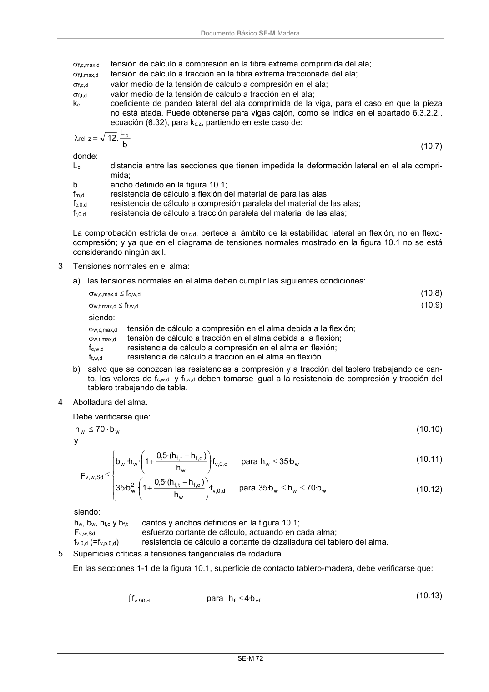

DB-SE-M Madera · edición 2019-12-20 · capa oficial
Documento DB-SE-M-oficial · SHA-256 del PDF 26b5819839ebfda78b0b119c5e76a0a37773b0d763c05688541870075df93718
Página física 78 de 132.
Copia fiel del PDF fuente · Fuente oficial
Ficha de la disposición en la fuente oficial
Formato: Texto de la página (Markdown)
Documento Básico SE-M Madera SE-M 72 f,c,max,d tensión de cálculo a compresión en la fibra extrema comprimida del ala; f,t,max,d tensión de cálculo a tracción en la fibra extrema traccionada del ala; f,c,d valor medio de la tensión de cálculo a compresión en el ala; f,t,d valor medio de la tensión de cálculo a tracción en el ala; kc coeficiente de pandeo lateral del ala comprimida de la viga, para el caso en que la pieza no está atada. Puede obtenerse para vigas cajón, como se indica en el apartado 6.3.2.2., ecuación (6.32), para kc,z, partiendo en este caso de: b L . 12 c z rel (10.7) donde: Lc distancia entre las secciones que tienen impedida la deformación lateral en el ala compri- mida; b ancho definido en la figura 10.1; fm,d resistencia de cálculo a flexión del material de para las alas; fc,0,d resistencia de cálculo a compresión paralela del material de las alas; ft,0,d resistencia de cálculo a tracción paralela del material de las alas; La comprobación estricta de f,c,d, pertece al ámbito de la estabilidad lateral en flexión, no en flexo- compresión; y ya que en el diagrama de tensiones normales mostrado en la figura 10.1 no se está considerando ningún axil. 3 Tensiones normales en el alma: a) las tensiones normales en el alma deben cumplir las siguientes condiciones: w,c,max,d fc,w,d (10.8) w,t,max,d ft,w,d (10.9) siendo: w,c,max,d tensión de cálculo a compresión en el alma debida a la flexión; w,t,max,d tensión de cálculo a tracción en el alma debida a la flexión; fc,w,d resistencia de cálculo a compresión en el alma en flexión; ft,w,d resistencia de cálculo a tracción en el alma en flexión. b) salvo que se conozcan las resistencias a compresión y a tracción del tablero trabajando de can- to, los valores de fc,w,d y ft,w,d deben tomarse igual a la resistencia de compresión y tracción del tablero trabajando de tabla. 4 Abolladura del alma. Debe verificarse que: w w b 70 h (10.10) y w w w d , 0, v w c,f t,f 2 w w w d , 0 ,v w c,f t,f w w Sd , w ,v b· 70 h b· 35 para f· h ) h h ·( 5,0 1 · b· 35 b· 35 h para f· h ) h h ·( 5,0 1 · h· b F (10.11) (10.12) siendo: hw, bw, hf,c y hf,t cantos y anchos definidos en la figura 10.1; Fv,w,Sd esfuerzo cortante de cálculo, actuando en cada alma; fv,0,d (=fv,p,0,d) resistencia de cálculo a cortante de cizalladura del tablero del alma. 5 Superficies críticas a tensiones tangenciales de rodadura. En las secciones 1-1 de la figura 10.1, superficie de contacto tablero-madera, debe verificarse que: ef f d 90 v b· 4 h para f (10.13)
